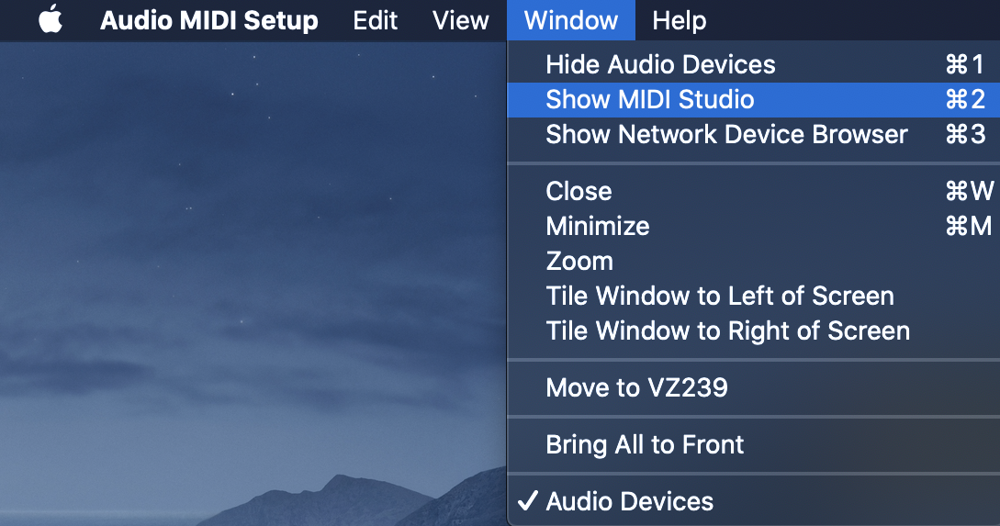
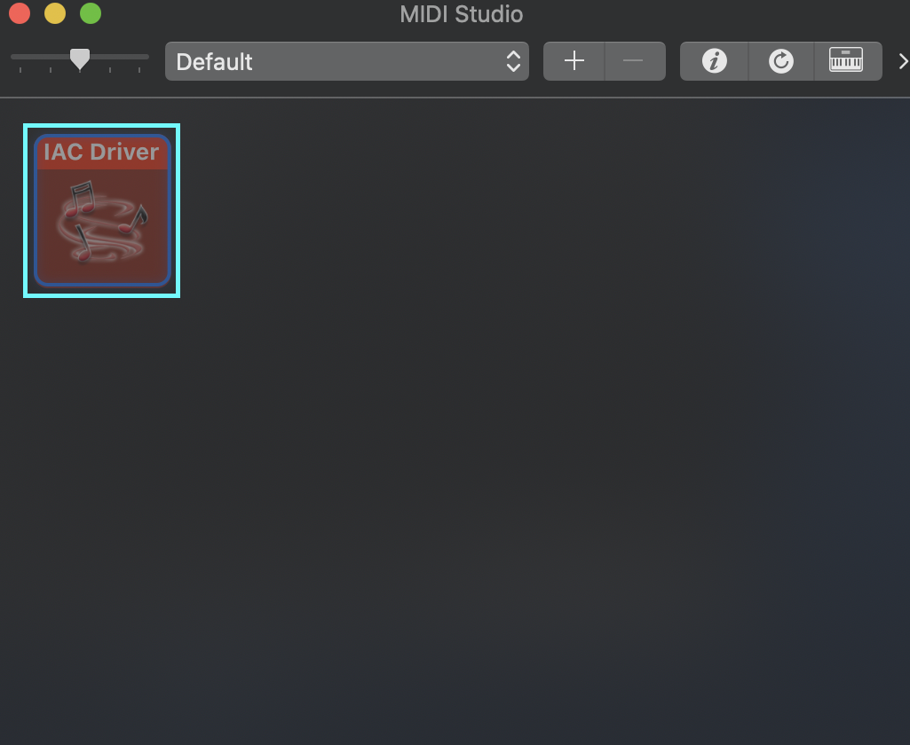
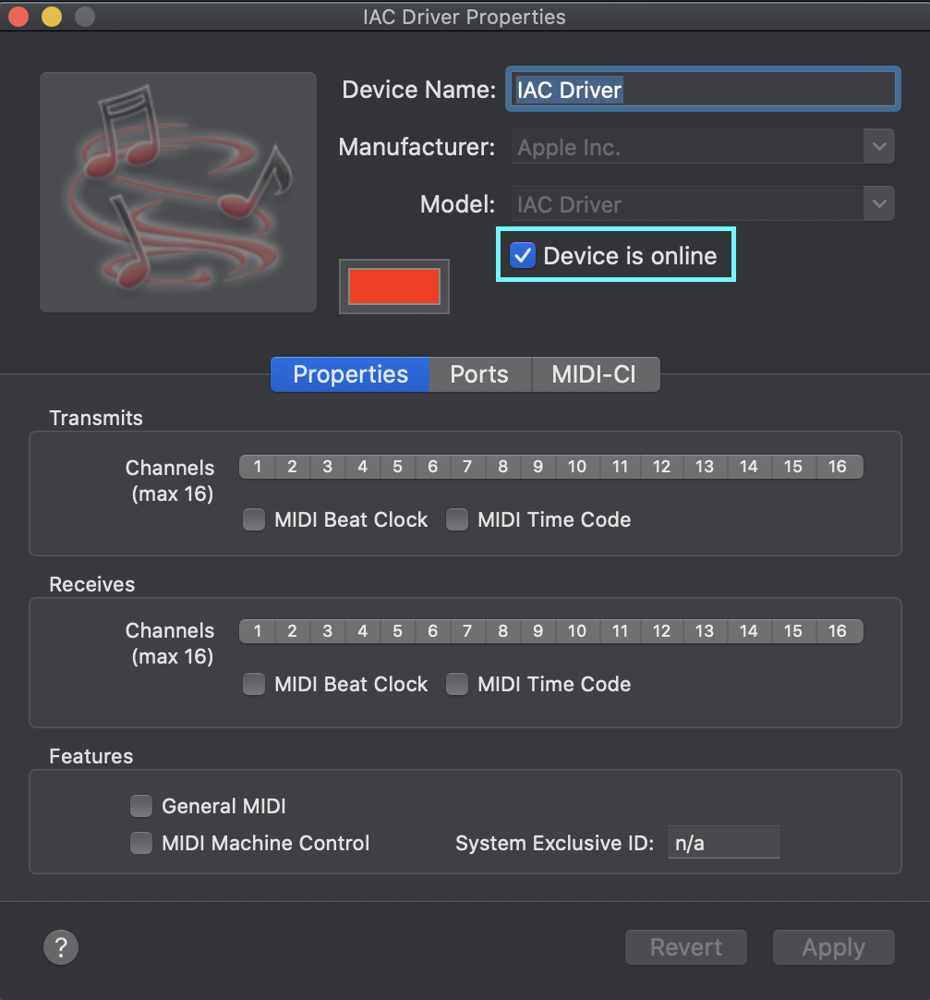
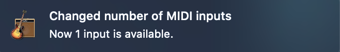

参考：Why pygame.midi doesn’t work on macos whereas pygame.mixer does
MIDI用の信号は普通のオーディオのOUTPUTでは使えないため、一度MIDI信号をDTMアプリなどを介してやるようにする必要がある。そのために、MacOSではAudio MIDI Setupという標準で入っているアプリを使用してDTMアプリに信号を渡してやるようにする。
まず、Audio MIDI Setupアプリを起動して、Window→Show MIDI Studioを選択。

次に、MIDI Studioの中のIAC Driverというものをダブルクリックして開く。

次にDevice is Onlineにチェックを入れる事で、MIDI信号をGarageBandなどのDTMアプリに自動で入力してくれるようになる。

ちなみに、GarageBandを立ち上げている状態でこのDevice is onlineにチェックを入れると、下のような通知がくる。

これで、GarageBandで新規Projectを作成したら、pythonで作成した信号を聞く事ができるようになる。
pythonからMIDI用の信号を作成し、音を再生する
まずはpygameをinstallする。
$ python3 -m pip install pygame
次に、下のようにpythonファイルを作成する。
import pygame.midi
import time
pygame.midi.init()
player = pygame.midi.Output(1)
player.set_instrument(0)
player.note_on(64, 127)
time.sleep(1)
player.note_off(64, 127)
del player
pygame.midi.quit()
これを実行するとGarageBand経由で音が聞こえるはず。 player.set_instruments(0)で楽器を選択しており、General_MIDI(wiki)では128（pythonのindexでは127）まであるらしい。 garagebandを使って再生するとgarageband側で設定した音でしか聞こえなかった。
Docker上のpythonでMIDIファイルを再生する
python:latest（2020/05/26現在ではpython3.8.2）のdocker image上で再生してみる。 まず、pygameを入れる必要があるが、そのために以下のものをapt-getでインストールしないといけない。
apt-get install -y libsdl-dev libsdl-image1.2-dev libsdl-mixer1.2-dev libsdl-ttf2.0-dev
apt-get install -y libsmpeg-dev libportmidi-dev libavformat-dev libswscale-dev
これでpygameをinstallする事ができる。
python3 -m pip install pygame
次に、docker上で再生した音はそのままでは聴けないので、ホスト側に渡す必要がある。 調べてみるとpulseaudioというものを使ってtcp経由でホストに送れるらしい。
まず、mac（ホスト）側にpulseaudioをインストールして、デーモンを立てる。
$ brew install pulseaudio
# デーモンをスタート
$ pulseaudio --load=module-native-protocol-tcp --exit-idle-time=-1 --daemon
# 確認
pulseaudio --check -v
デーモンは下のコマンドでも立てられるらしい。
$ brew services start pulseaudio
次に、dockerコンテナからpulseaudioに接続する。下のコマンドでdockerコンテナを起動し、コンテナ内にpulseaudioをインストール。
$ docker run -it -e PULSE_SERVER=docker.for.mac.localhost -v ~/.config/pulse:/root/.config/pulse [image] [command]
# in container
apt-get install -y pulseaudio
後は適当に音を出すプログラムを走らせるとホスト側で聞こえるようになる。 ただ、上で書いたサンプルコードを実行しても以下のようなエラーが出て実行できないため、MIDIファイルを作成して再生する必要がある。
ALSA lib seq_hw.c:466:(snd_seq_hw_open) open /dev/snd/seq failed: No such file or directory
Traceback (most recent call last):
File "sample_midi.py", line 5, in <module>
player = pygame.midi.Output(1)
File "/usr/local/lib/python3.8/site-packages/pygame/midi.py", line 432, in __init__
raise MidiException("Device id invalid, out of range.")
pygame.midi.MidiException: 'Device id invalid, out of range.'
サンプルMIDIファイルを再生する
音楽の素材屋さんからMIDIファイルをダウンロードする事ができる。
試しに、モーツアルトで検索して一番上にきた曲KV136 第二楽章（オルゴール）をダウンロードして再生する。
import pygame.mixer
import time
pygame.mixer.init()
pygame.mixer.music.load('KV136_2MB.midi')
pygame.mixer.music.play()
time.sleep(15)
pygame.mixer.music.pause()
Audio MIDI SetupとGarageBandがちゃんと設定されていれば、これで音楽が聞こえるはず。
未解決のError
ALSA lib seq_hw.c:466:(snd_seq_hw_open) open /dev/snd/seq failed: No such file or directory
Traceback (most recent call last):
File "sample_midi.py", line 5, in <module>
player = pygame.midi.Output(1)
File "/usr/local/lib/python3.8/site-packages/pygame/midi.py", line 432, in __init__
raise MidiException("Device id invalid, out of range.")
pygame.midi.MidiException: 'Device id invalid, out of range.'
まずは上のエラー。docker上でpygame.midiで直接MIDIの信号を送ろうとすると、/dev/snd/seqがないと言われDeviceのポートが存在しない状態になる。
StackOverFlowなどでいろいろ探ってみたが解決法が探しきれなかった…
fluidsynth: error: Unable to open file "/usr/share/sounds/sf2/TimGM6mb.sf2"
fluidsynth: error: Couldn't load soundfont file
fluidsynth: error: Failed to load SoundFont "/usr/share/sounds/sf2/TimGM6mb.sf2"
fluidsynth: warning: Failed to pin the sample data to RAM; swapping is possible.
次にこのエラー。pygame.mixerを使ってMIDIファイルを再生する時にpygame.mixer.music.load($midi_file_name)を実行すると出てくる。
今のところ、このエラーが出てても「動いてるからヨシ！」って感じで無視している。